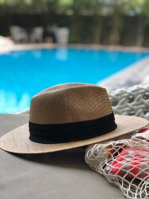
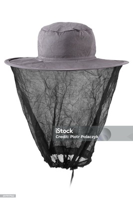

Hello hat enthusiasts and fellow fashion aficionados! As a proud
member of the HatRanker.com team, I'm here to share a little bit
about myself and spill the beans on why the Fedora is, without a
doubt, the epitome of timeless stylishness.
🕵️♂️ Getting to Know Your Hat-Enthusiast Guide:
As a company representative, I'm not just an advocate for
HatRanker.com; I'm also a fervent hat enthusiast. My personal
journey into the world of hats began with a profound appreciation for
the Fedora. It's not just a hat; it's a symbol of classic charm,
sophistication, and a touch of mystery.

Greetings fellow hat enthusiasts and advocates of
functionality! As a dedicated member of the HatRanker.com
team, I'm thrilled to share a bit about myself and delve
into why the beekeeper mask holds a special place in my
heart as the pinnacle of hat functionality. 🐝 Beekeeper Mask: My Functionality Marvel
Why the beekeeper mask, you may wonder? It's not just a
hat; it's a brilliant fusion of form and function. The
beekeeper mask serves a crucial purpose – providing
protection without compromising visibility or
breathability. As a functional hat, it exemplifies the
harmonious balance between utility and style.